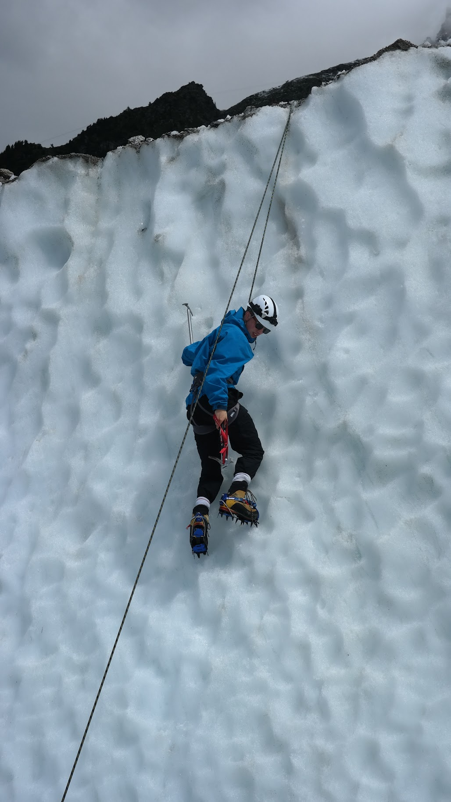
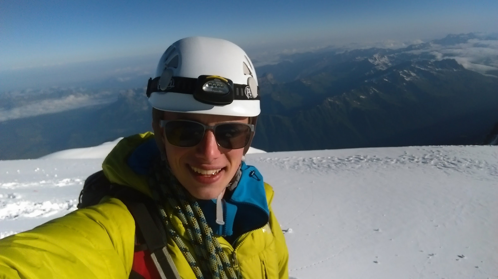
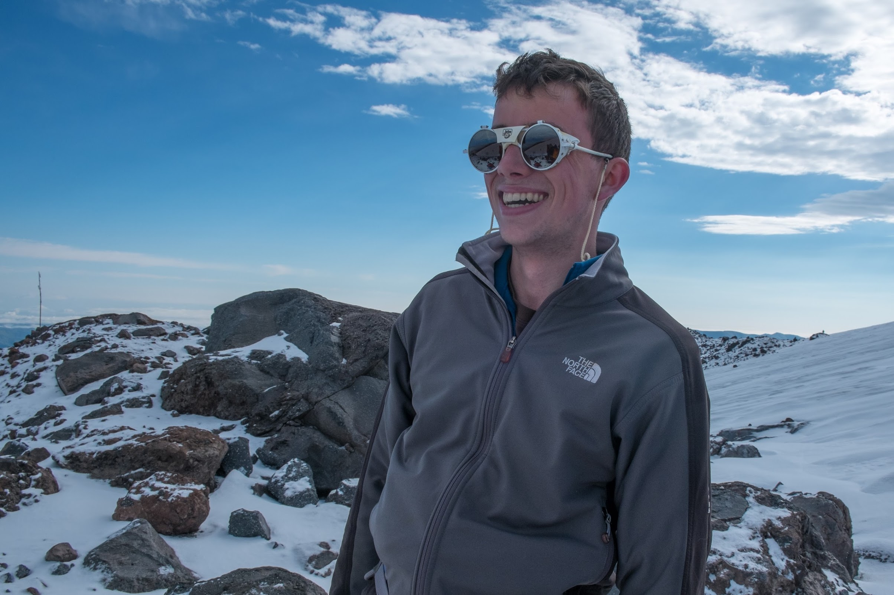

Getting into it
I grew up hearing about my dad's climbing trips, and stories of legendary alpinists like Greg Lowe, Reinhold Messner and Yvon Chouinard — enough to send me out to the Alps as soon as I could drive, teaching myself from old books and YouTube videos how to build ice anchors, use crampons, and the rest.

Alps — Mont Blanc, 2016
In the summer of 2016, I organised and led a trip to Chamonix for just over two weeks of climbing. We taught ourselves more advanced mountaineering techniques and put them straight into practice, summiting multiple peaks on multi-day expeditions from our base camp — including Mont Blanc, the highest peak in Europe.

Caucasus — Mount Elbrus, 2017
I travelled to southern Russia to climb Mount Elbrus in the summer of 2017. We gave ourselves a week-long window for the final 18-hour push to the 5,642m summit, but the weather turned — gale-force winds, low visibility. By 5,200m, on our one clearer day, several of the team were showing early signs of hypothermia, so we called it. I plan to go back.